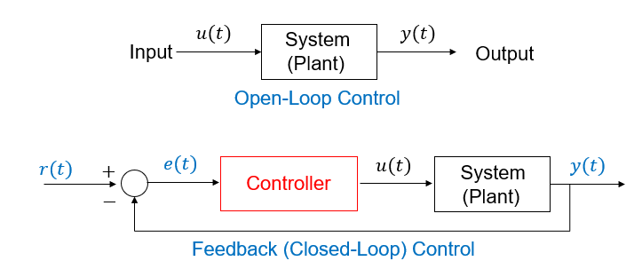

🔬 Lab 17 Control Systems#
📌 Objectives#
Students should be able to combine input capture measurements from Timer A3 and PWM outputs with Timer A0.
Students should be able to develop a system to control the speed of the two motors.
Students should be able to evaluate the performance of the control system.
Note
If debugging is the process of removing software bugs, then programming must be the process of putting them in. -Edsger Dijkstra
📜 Synopsis#
Armed with the previous labs, we now have the means to drive the robot and measure the speed of the robot, the distance traveled, the position of the robot from the line, and the distance to the walls. In this lab, we will implement automatic controllers that cause the robot to perform the motions, such as following a line and driving between the walls. The control methods that we will use fall into the class called proportional-integral-derivative (PID) control systems.
If the controller does not use a measure of the system output in computing the control action to take, the system is called open-loop control. An example is the drive-in-maze exercise in Lab14. If the system output is measured and fed back for use in the controller computation, the system is called a closed-loop or feedback control system. Shown in the figure below are open-loop control (top) and closed-loop control (bottom).
{kind=link}
Note
Control systems are a rich and complex field within engineering spanning: electrical engineering, robotics engineering, aerospace engineering, mechanical engineering, and computer engineering. This module provides a brief introduction.
💻 Procedure#
Setup#
Go to ECE382 Teams > General > Files > Class Materials > SourceFiles.
Download
Program17_1.c,Program17_2.c, andProgram17_3.cfrom the Teams folder into your/workspace/Lab17_Controlfolder using Windows File Explorer (not Code Composer Studio). Caution: It must be in theLab17_Controlfolder not in theincfolder.Download
TimerA2.cinto your workspace/inc folder using Windows File Explorer (not Code Composer Studio). You need to overwrite the existingTimerA2.c. Caution: It must be in theincfolder not in theLab17_Controlfolder.Right-click on your
Lab17_Controlproject in CCS and select “Add Files…”. Browse to yourincfolder and selectTimerA2.c. Click Open. Ensure “Link to file” is selected and create a link to the “PROJECT_LOC”.
Implement a proportional controller in Program17_1#
This is part of Homework 17
Read the entire code in
Program17_1.c.Complete the
Controllerfunction inProgram17_1.c.Follow the instructions inside
Program17_1.cto complete it.Do not implement a proportional-integral (PI) controller for this homework.
Copy and paste the code you wrote inside
Controller()in Gradescope to submit your Homework 17.
Implement a proportional-integral controller in Program17_1#
Complete the
Controller()function inProgram17_1.cCreate a proportional-integral controller to drive both motors at the desired speed.
Experimentally determine the best \(K_p\) and \(K_i\) constants to create a stable system.
You can change \(K_p\) and \(K_i\) at line 80 inside
Program17_1. You can also change them on the fly using the bump switches for fine tuning.Record the \(K_p\) and \(K_i\) values and report them in the following section.
Demo
Program17_1()showing a proportional-integral controller that regulates the wheel speeds of 50 rpm and 100 rpm in the presence of external disturbance. You should apply disturbance after the speed settles at the desired speed.
Discuss the performance of your controller in Program17_1()#
Collect the data for the wheel speed of 100 rpm via the USB/UART port and discuss the performance of your controller in
Program17_1().You may need to change the Serial Terminal buffer size. The default is 1000 lines. If you need more than 1000 lines, you need to change it. The instruction is here.
Provide the step response of the speed controller with/without the disturbance, which is applied after the speed settles at the desired speed.
Provide the input signals (PWM duty cycles) to the robot.
You can use any software you like - MATLAB, MS Excel, etc. for figures. Your plots must include labels, units, and legends whenever required. You should plot the region of interest. Use the axis limit functions such as
plt.ylimorplt.xlim.Discuss the performance of your controller based on the response time, overshoot, and steady-state error. Report the \(K_p\) and \(K_i\) values you used for these plots.
Run
Program16_2()and slightly hold one of the wheels to apply disturbance. RunProgram17_1()with a PI controller and do the same. Which one performs better? Explain why or why not.
Warning
Take this part very seriously. The crucial part of your final report will be system performance analysis. Scientific analysis is primarily based on the information collected, often using figures.
Implement a controller to follow a line in Program17_2()#
Complete the
Controller()function inProgram17_2.cWrite a proportional controller to drive the robot using the line following.
Experimentally determine the best proportional constant and swing values to create a stable system.
Record the \(K_p\) value and report it in the following section.
Your robot must follow the white line in the maze. You are not allowed to change
reflectance.c. If you change it, your other projects that used to work on a black line will fail. There is a very simple method to make it work on white lines without modifyingreflectance.c.Demo
Program17_2with the robot following the white line in the maze at any speed.You must place your robot at least 1 inch off the line as shown in the figure below. Otherwise, you will not be able to measure the step response.
{kind=link}
Discuss the performance of your controller in Program17_2()#
Collect the data via the USB/UART port to discuss the performance of your controller in
Program17_2().Provide the step response of the line-following robot.
Provide the input signals (PWM duty cycles) to the robot.
You can use any software you like - MATLAB, MS Excel, etc. for figures. Your plots must include labels, units, and legends whenever required. You should plot the region of interest. Use the axis limit functions such as
plt.ylimorplt.xlim. Report the \(K_p\) value you used for these plotsDiscuss the performance of your controller based on the response time, overshoot, and steady-state error.
Create a controller to stay between two walls in Program17_3#
Complete the
Controller()function inProgram17_3.cCreate a proportional controller to drive between two walls using IR sensors.
Experimentally determine the best proportional constant and swing values to create a stable system.
Find three \(K_p\) values: one for a slow response, another for a fast response with a slight overshoot, and the other for a very fast response with a significant overshoot.
Record the \(K_p\) values and report them in the following section.
Demo
Program17_3with the three \(K_p\) values.You must place your robot at least 3 inches off the line.
Discuss the performance of your controller in Program17_3()#
Collect the data via the USB/UART port to discuss the performance of your controller in
Program17_3().Provide the step response of the wall-following robot.
Provide the input signals (PWM duty cycles) to the robot.
You can use any software you like - MATLAB, MS Excel, etc. for figures. Your plots must include labels, units, and legends whenever required. You must provide a step response for each \(Kp\) value. Report the \(K_p\) values you used for these plots.
Discuss the performance of your controller based on the response time, overshoot, and steady-state error.
🚚 Deliverables (50 + 10 Bonus Points + 5 Early Bird Points)#
All deliverables are due on
T36 (Tue 29 Nov) 0700 - M-day sections
M37 (Wed 30 Nov) 0700 - T-day sections
Deliverable 1#
[8 Points] Demo
Program17_1()showing a proportional-integral controller that regulates the wheel speeds of 50 rpm and 120 rpm in the presence of external disturbance. You should apply disturbance after the speed settles at the desired speed.
Deliverable 2#
[10 Points] Collect the UART data to discuss the performance of your controller in
Program17_1(). Provide a step response of the speed controller with disturbance, which is applied after the speed settles at the desired speed. Your plots must include labels, units, and legends whenever required.Discuss the performance of your controller based on the response time, overshoot, and steady-state error.
Run
Program16_2()and slightly hold one of the wheels to apply disturbance. RunProgram17_1()with a PI controller and do the same. Which one performs better? Briefly explain why or why not.
Deliverable 3#
[10 Points] Demo
Program17_2()showing a proportional controller that follows the white line in the first straight section of the maze. Your robot must start 1.5 inches (or 4 cm) off the line to evaluate the step response.
Deliverable 4#
[10 Points] Collect the UART data to discuss the performance of your controller in
Program17_2(). Provide a step response of the line-following robot. Your plots must include labels, units, and legends whenever required.Discuss the performance of your controller based on the response time, overshoot, and steady-state error.
Deliverable 5#
[10 Points] Demo
Program17_3()showing a proportional controller that follows the wall in the first straight section of the maze. Your robot must start 3 inches (or 7.5 cm) off the line to evaluate the step response.Your demo must include three step responses - slow response, fast response with no overshoot, and fast response with overshoot. Report their \(K_p\) values.
Deliverable 6#
[12 Points] Collect the UART data to discuss the performance of your controller in
Program17_3(). Provide the step responses of the wall-following robot for the \(K_p\) values you used. Your plots must include labels, units, and legends whenever required.Use the step responses to discuss the performance of your controller with three \(K_p\) values based on the response time, overshoot, and steady-state error.
Happy Holiday Bonus#
[5 Points] Complete Deliverables 1, 3, & 5 before the Thanksgiving break and enjoy the holiday. Your successful demo should be submitted by Wed 23 Nov 2359.